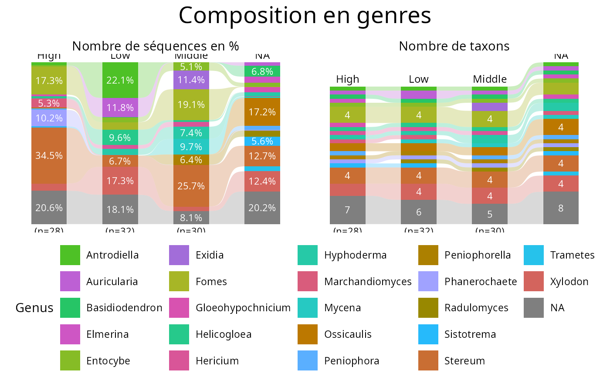

Build the two complementary MiscMetabar::tax_bar_pq() views of the same
physeq object in a single call and assemble them with patchwork:
left panel: relative number of sequences (
percent_bar = TRUE,nb_seq = TRUE),right panel: number of taxa (
percent_bar = FALSE,nb_seq = FALSE).
The fill guide is collected into a single shared legend, and one overall
title is added above the two panels through
patchwork::plot_annotation().
Usage
tax_bar_duo_pq(
physeq,
fact = "Sample",
taxa = "Order",
title = paste0(taxa, " composition"),
subtitle = c("Number of sequences (%)", "Number of taxa"),
show_values = c(TRUE, TRUE),
minimum_value_to_show = c(0.05, 4),
reorder_colors = TRUE,
alternate_lightness = TRUE,
add_ribbon = TRUE,
legend_position = "bottom",
legend_nrow = NULL,
title_size = 20,
subtitle_size = 11,
...
)Arguments
- physeq
(required) A phyloseq::phyloseq object.
- fact
(default: "Sample") Name of the column in the
sam_dataslot used to group samples on the x-axis.- taxa
(default: "Order") Name of the taxonomic rank used to fill the bars.
- title
(default:
paste0(taxa, " composition")) Overall title added withpatchwork::plot_annotation(). UseNULLfor no title.- subtitle
(default:
c("Number of sequences (%)", "Number of taxa")) Subtitle of the left and right panels. A length one value is used for both panels. UseNULLfor no subtitle.- show_values
(logical, default
c(TRUE, TRUE)) Passed toMiscMetabar::tax_bar_pq(). The first value applies to the left (sequence) panel, the second to the right (taxa) panel. A length one value is recycled.- minimum_value_to_show
(default:
c(0.05, 4)) Passed toMiscMetabar::tax_bar_pq(). As forshow_values, the first value applies to the left (sequence, in percent) panel and the second to the right (taxa, in counts) panel.- reorder_colors
(logical, default TRUE) If TRUE,
reorder_distinct_colors()is applied to both panels to maximize the perceptual contrast between adjacent bar segments.- alternate_lightness
(logical, default TRUE) Passed to
reorder_distinct_colors(). Only used whenreorder_colors = TRUE.- add_ribbon
(logical, default TRUE) Passed to
MiscMetabar::tax_bar_pq(): draw ribbons connecting the bars of consecutive modalities.- legend_position
(default: "bottom") Position of the single collected legend, passed to the
legend.positiontheme element. Use "right" to get the usual side legend, or "none" to drop the legend.- legend_nrow
(default: NULL) Number of rows of the collected legend. Only relevant when
legend_positionis "bottom" or "top", where the default single row quickly becomes unreadable for a taxonomic rank with many levels.- title_size
(default: 20) Font size of the overall title.
- subtitle_size
(default: 11) Font size of the panel subtitles.
- ...
Other arguments passed on to
MiscMetabar::tax_bar_pq()for both panels (e.g.order_modality,label_taxa,bar_width).
Note
Both panels are computed from the same physeq object and the same
taxa rank, so their discrete fill scales share the exact same set of
levels. reorder_distinct_colors() is deterministic for a given set of
levels: each taxon therefore receives the same color in both panels, and
patchwork can merge the two guides into one legend.
Examples
# \donttest{
if (requireNamespace("patchwork", quietly = TRUE)) {
data(data_fungi_mini, package = "MiscMetabar")
tax_bar_duo_pq(data_fungi_mini, "Height", taxa = "Genus")
tax_bar_duo_pq(data_fungi_mini, "Height",
taxa = "Genus",
title = "Composition en genres",
subtitle = c("Nombre de séquences en %", "Nombre de taxons"),
minimum_value_to_show = c(0.05, 4)
)
}

# }